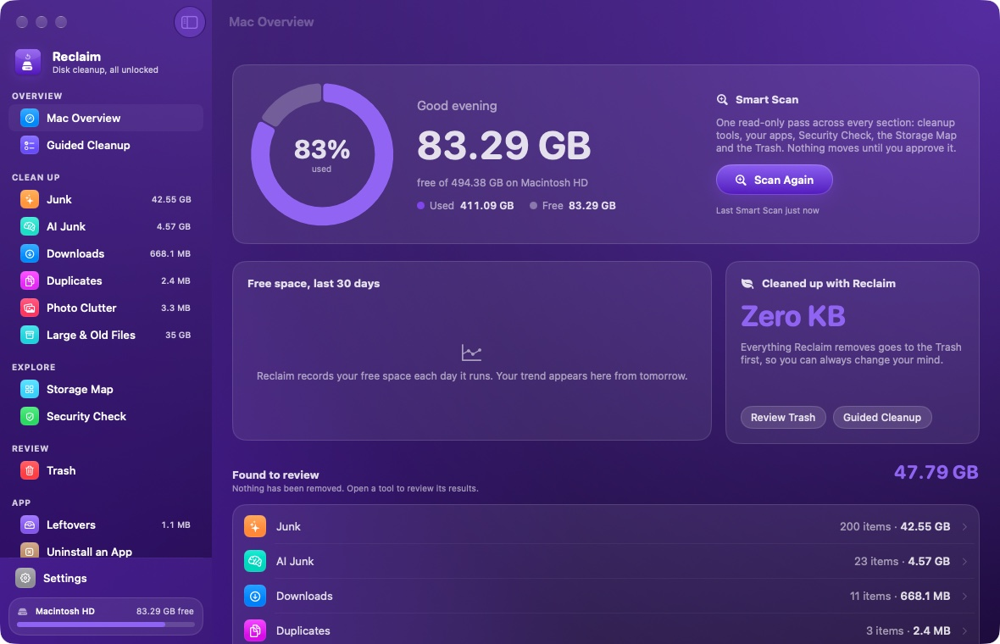
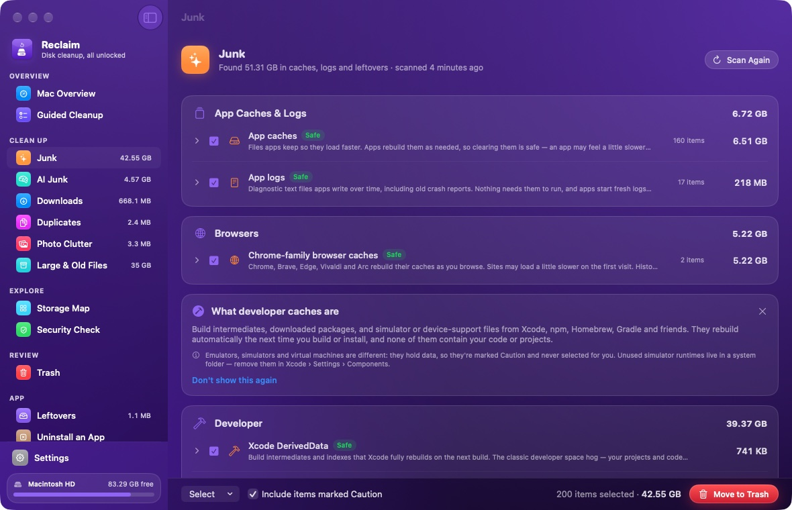

Smart Scan
One pass across every section, from cleanup tools to the Trash, with a single report.
Reclaim finds what's eating your disk, explains every suggestion, and moves nothing until you say so. Everything it removes goes to the Trash first.

Look first, decide yourself, then reclaim. Each tool starts with a read-only scan and tells you why it suggests something.
One pass across every section, from cleanup tools to the Trash, with a single report.
A short plan you approve item by item, re-checked before it runs, with Undo.
Caches, logs and developer junk, plus node_modules and build folders in projects you've left.
What AI tools leave behind: agent temp files, old sessions, caches and models.
Build cache, unused images, stopped containers and orphaned volumes.
Old installers, archives and unfinished downloads, biggest and oldest first.
Byte-for-byte identical files. One copy always stays as the keeper.
Look-alike shots, screenshots, screen recordings and blurry photos.
Big files you've forgotten, filtered by size, age and kind.
An interactive treemap of any folder. Drill in and collect what to remove.
Signatures, notarisation, login items and where downloads came from. Read-only.
Support files from apps you already removed, matched by bundle identifier.
Remove an app with its caches, preferences and containers. Spot apps unused for months.
Everything Reclaim moved, with restore to the original folder.
Right-click anything and choose Never Suggest This. Every tool skips it, and anything inside it, from then on.

Screens from a real Mac. Personal file and folder names are blurred.
Smart Scan checks the cleanup tools, your apps, Security Check, the Storage Map and the Trash in one read-only pass — then reports. You open a tool to review, and only what you approve moves to the Trash.
Coding agents, chat apps and local model runners fill your Mac with scratch folders, browser profiles, session logs and multi-gigabyte downloads. Reclaim finds them — and leaves alone anything a running app still has open.
Pick one of six accents and the whole window takes on your colour — sidebar, cards, buttons, even the Dock icon and widget. Try it here:
Light or dark, in your language:
Reclaim runs entirely on your Mac. No account, no analytics — its only request is a check for updates.
Every tool starts with a read-only scan and explains each suggestion.
Risky items are marked Caution and never selected for you.
Everything goes to the Trash first, with Undo and a full history.
No uploads, no tracking. The only request is the GitHub update check.
Free space, memory, CPU and its temperature at a glance, with a Smart Scan button.
Free space and what the last scan found. Shows up in builds signed with an Apple certificate.
“Run a Smart Scan in Reclaim” or check storage hands-free.
Type a tool name in Spotlight and jump straight there.
Reclaim checks GitHub for new releases and installs them in one click.
Open Reclaim.dmg and drag Reclaim onto the Applications folder.
Download ReclaimReclaim isn't signed with a paid Apple Developer ID, so macOS asks once. Open Reclaim, then go to System Settings › Privacy & Security and click Open Anyway. Or run this in Terminal:
xattr -dr com.apple.quarantine /Applications/Reclaim.appOn the first scan Reclaim asks for your Home folder and checks every location it reads. Full Disk Access is optional — it lets Reclaim measure the Trash, Mail and iPhone backups.
Requires macOS 26 or later · Apple silicon and Intel · All releases
Yes. Every tool and feature is included. There's no subscription, no account and no in-app purchase.
No. Scans — including scheduled ones — only find and report. Items move to the Trash only when you choose them, and you can restore them from Reclaim's Trash page until you empty the Trash.
Reclaim is signed ad hoc rather than with a paid Apple Developer ID, so Gatekeeper can't verify the developer. Allow it once in System Settings › Privacy & Security, or use the Terminal command above.
macOS only lists widgets from apps signed with an Apple certificate that has a team, and the downloadable build is signed ad hoc. If you build Reclaim yourself with a free Apple Development certificate (Xcode › Settings › Accounts), the widget appears. The rest of the app works the same either way.
No. Everything works without it. With it, Reclaim can also measure the Trash, Mail downloads, iPhone backups and other apps' data.
From version 1.2, Reclaim asks GitHub for the latest release once a day (you can turn this off, or choose Reclaim › Check for Updates…). When there's a new version it shows a note on Home; one click downloads it, checks it against the SHA-256 checksum GitHub publishes, swaps it in place and reopens. Your settings and history are kept. On 1.1 or earlier, download 1.2 once from this page.
No. Security Check reads code signatures, notarisation, login items and download records macOS already keeps. It has no malware database and works offline.
Reclaim is open source on GitHub. You can build it yourself with Xcode.